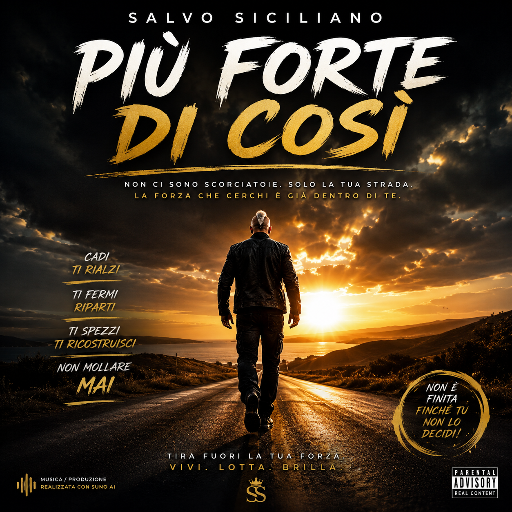
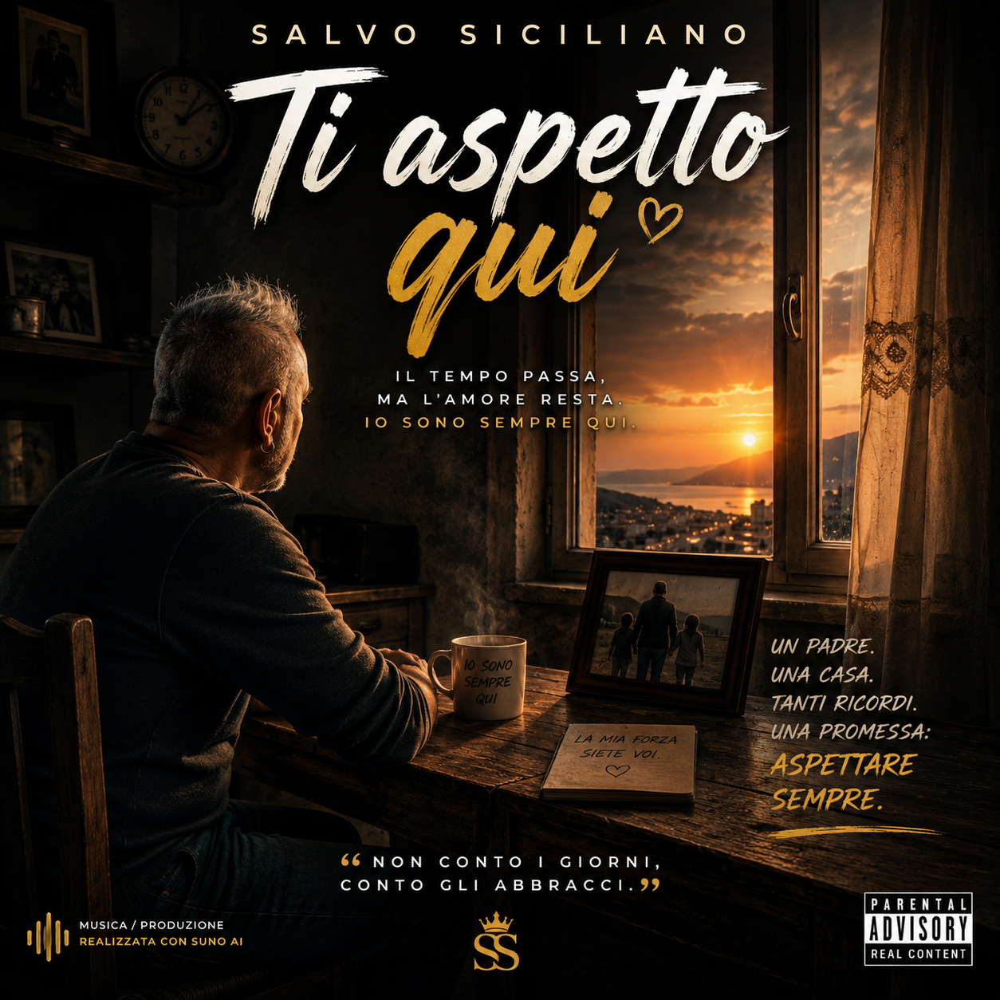
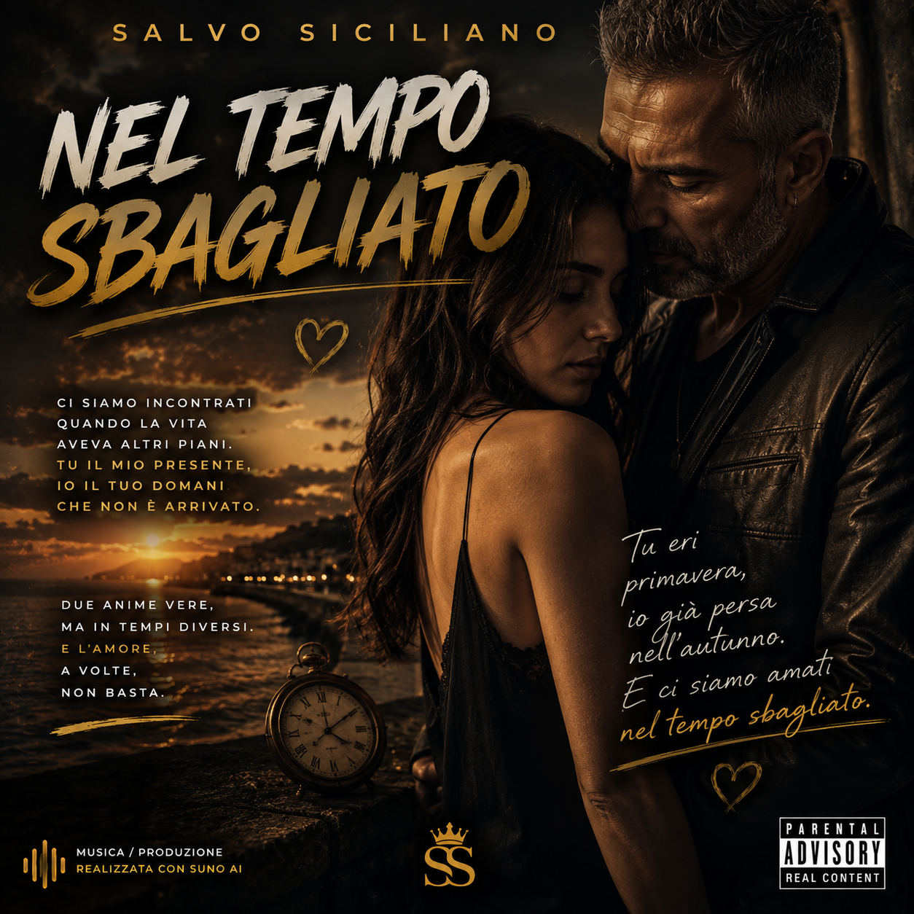
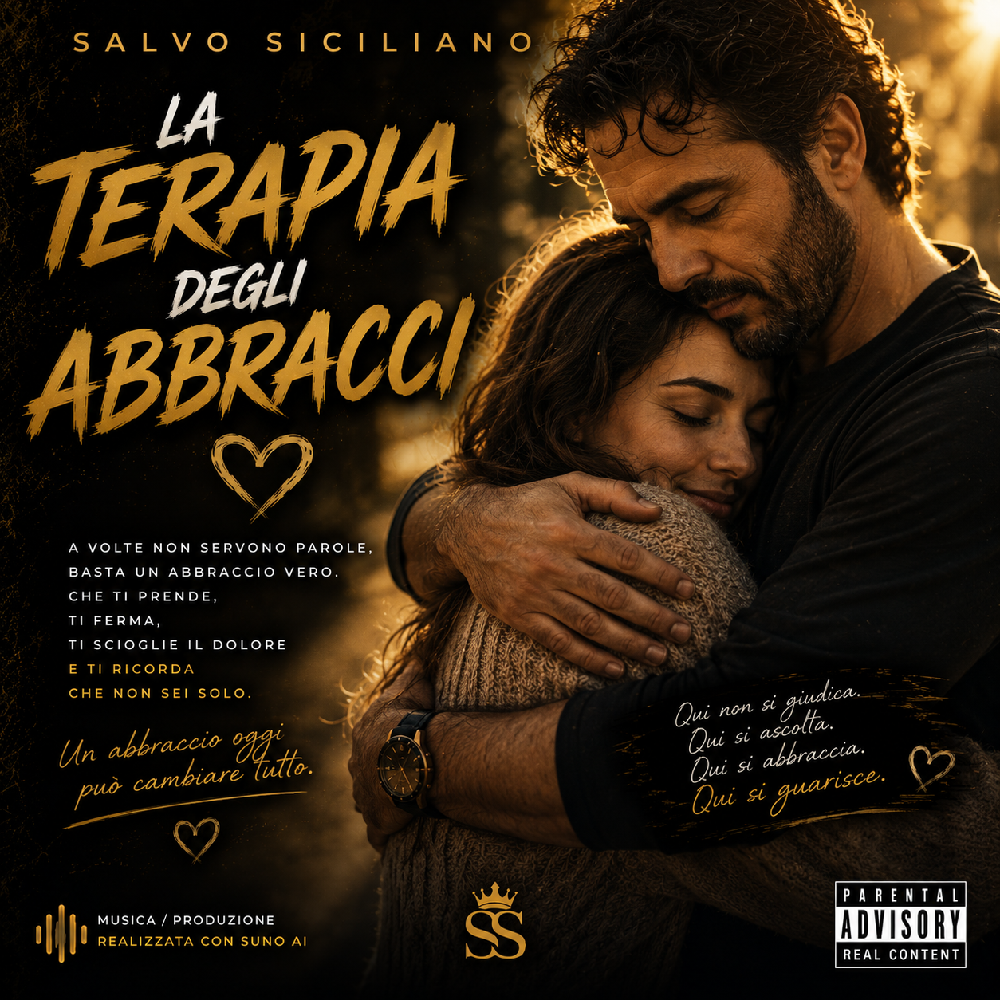
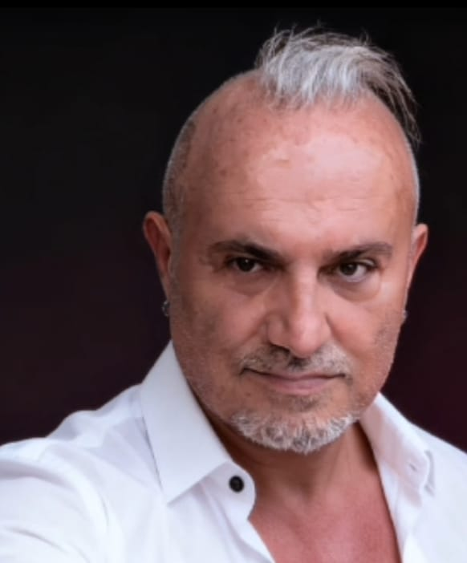

♪ Le mie canzoni

Più forte di così
Testo: Salvo Siciliano · Musica/produzione realizzata con Suno AI
▶ Ascolti 0

Ti aspetto qui
Testo: Salvo Siciliano · Musica/produzione realizzata con Suno AI
▶ Ascolti 0
Ossessione d’amore
Testo: Salvo Siciliano · Musica/produzione realizzata con Suno AI
▶ Ascolti 0

Nel tempo sbagliato
Testo: Salvo Siciliano · Musica/produzione realizzata con Suno AI
▶ Ascolti 0

La terapia degli abbracci
Testo: Salvo Siciliano · Musica/produzione realizzata con Suno AI
▶ Ascolti 0

Chi sono
Sono Salvo Siciliano. Nelle mie canzoni racconto emozioni, forza, famiglia, amori difficili e quei momenti della vita che spesso non riusciamo a dire a parole.
La mia musica. La mia storia.